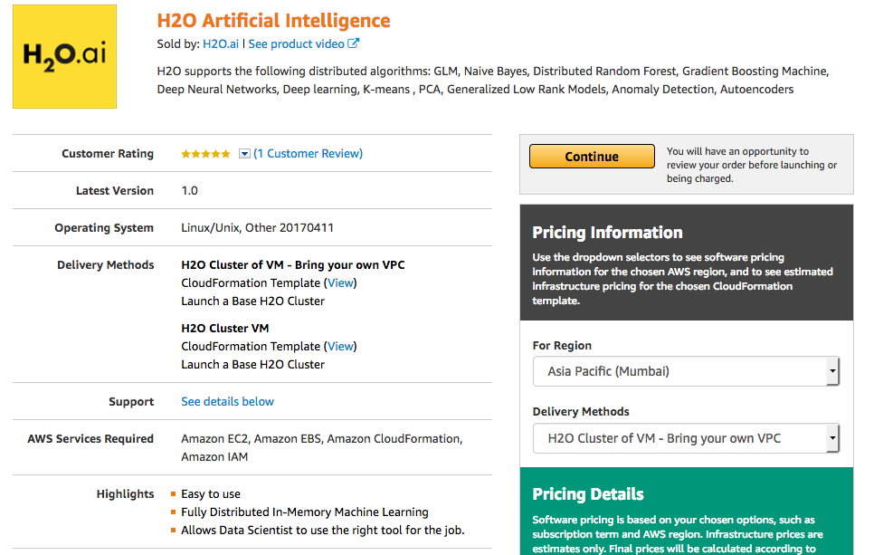
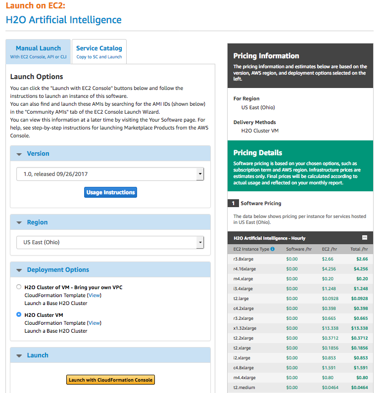
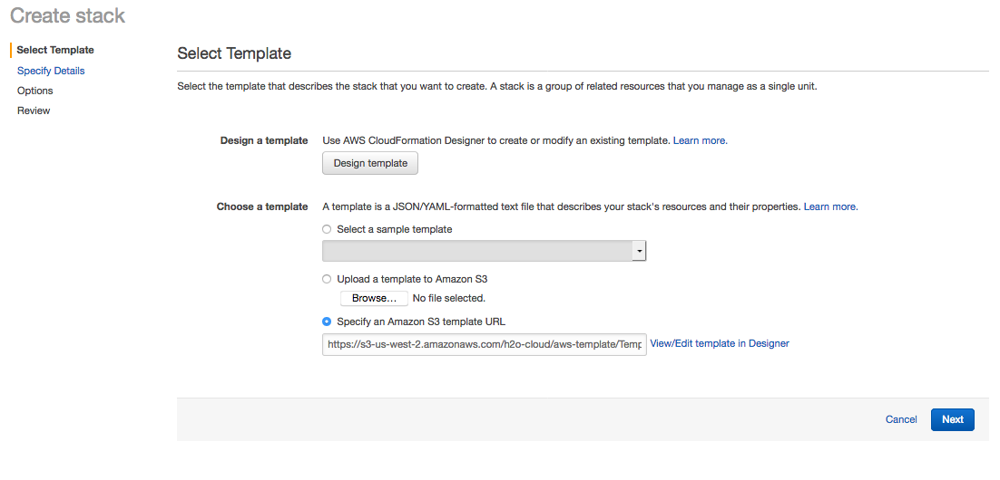
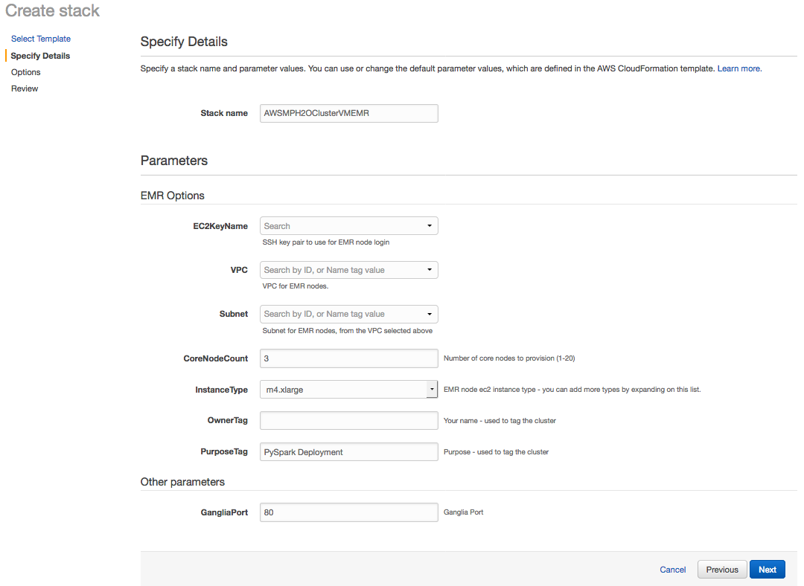
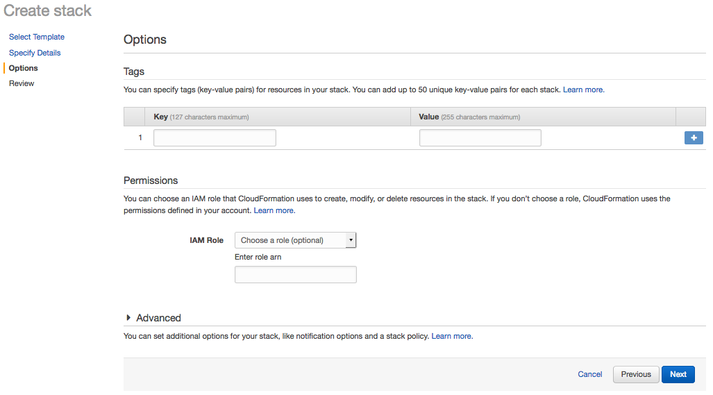

Use Sparkling Water with Amazon EMR¶
This section describes how to use Sparkling Water with Amazon EMR via the Web Services UI. An example describing how to do this using the AWS CLI is available in the Analytics at Scale: H2O, Apache Spark and R on AWS EMR blog post (courtesy of Red Oak Strategic).
To use Sparkling Water with an EMR cluster, you can use a premade H2O template.
Log in to the AWS Marketplace.
In the AMI & SaaS search bar, search for H2O, and select H2O Artificial Intelligence to open H2O in the marketplace. Review the information on this page. Note that the Delivery Methods section provides two options:
H2O Cluster of VM: All the VPC, subnets, and network security groups are created for you.
H2O Cluster of VM - Bring your own VPC: All the networks security groups, subnets, and internet gateways are created by the user.
Click Continue after reviewing to open the Launch on the EC2 page.

The Launch on the EC2 page provides information about launch options. On the Manual Launch tab:
Select the offering that you prefer.
Select the region to launch.
Specify a Deployment option.
Click Launch with CloudFormation Console to begin creating your stack.

On the Select Template page, enter https://s3-us-west-2.amazonaws.com/h2o-cloud/aws-template/TemplateEMR.json in the Specify an Amazon S3 template URL field.
This template requires an install script, which is available here: https://s3.amazonaws.com/h2o-release/sparkling-water/spark-3.1/3.36.1.4-1-3.1/templates/aws/install_sparkling_water_3.36.1.4-1-3.1.sh. This script can be added using one of the following methods:
Download and place the script in the following s3 path: s3://h2o-cloud/aws-template/install_sparkling_water_3.36.1.4-1-3.1.sh
or
Modify the s3 path to the script in the TemplateEMR.json file
Click Next when you are done.

Note that the Specify Details page now includes an EMR Options section. Enter a name for the stack, update any options as desired, and then click Next to continue.

Enter any optional tags and/or permissions on the Options page. Click Next to continue.

Review the Stack configuration. Click Create to create the Stack or click Previous to return to another page and edit any information.
After your EMR cluster is created, you can ssh into your head node. In the head node, you will find an H2O folder with Sparkling Water inside. To start any H2O jobs with Sparkling Water, follow the instructions located on the download page (https://www.h2o.ai/download/).
Note: It is important to add the following Spark configuration to any of your EMR jobs:
--conf spark.dynamicAllocation.enabled=false --conf spark.scheduler.minRegisteredResourcesRatio=1
and for EMR 5.x (5.32.0 and newer) also:
--conf spark.yarn.heterogeneousExecutors.enabled=false